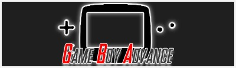

NES
SNES
Nintendo 64
GBA

Advance Wars
Advance Wars 2
Astro Boy:Omega Factor
Castlevania:Aria of Sorrow
Castlevania:Circle Of The Moon
Capcom Classic
Dinasty Warrior Advance
Fire Emblem
Fire Emblem:The Sacred Stones
Final Fantasy VI advanced
Final Fantasy Tactics
Golden sun
Golden sun:the lost age
Harvest Moon:Friends of the Mineral Town
Ninja Five-O
Mother 3 (Japan)
Metroid Fusion
Metroid Zero Mission
Mario & luigi : super star saga
Mario Golf advanced tour
Mario Tennis: Power Tour
Mario Kart: Super Circuit
Mario vs Donkey Kong
Megaman Zero
Megaman Zero 2
Megaman Zero 3
Megaman Zero 4
Megaman Zero collection
Metal Slug Advance
Sword Of Mana
Pokemon ruby
Pokemon Sapphire
Pokemon fire red
Pokemon emerald
Pokemon Mistery Dungeon:red rescue team
Pokemon PACK
The legend of Zelda:Minish Cap
The legend of Zelda: A link To The Past + four swords
Kirby and the amazing mirror
Kirby Nightmare in Dreamland
Kingdom hearts:Chain of Memories
WarioWare Twisted
WarioWare.inc : Mega Microgame
here you can download
Visual Boy emulator
!